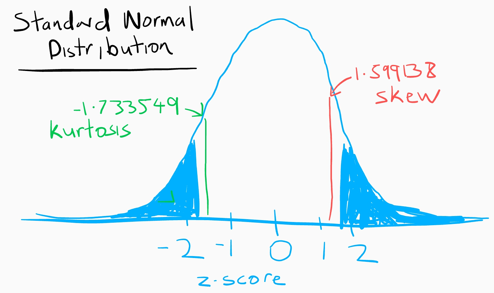

Hi, I'm Brendan
November 1, 2020
Secondary School Student Performance
Introduction
I am writing this blog as part of an assignment. My Details:
| Student Name: | B Kent |
| Student Number: | cxxxxxxxx |
| Programme Code: | TU060 |
| Version R: | R version 4.0.3 (2020-10-10) |
| R packages: |
Getting started
We explore a student exam performance data set. This is a data set about secondary school academical achievements in Portugal. The data contains two set of results, one set for results in Maths and one set for results in Portuguese. These are merged together to form one data set which I will endeavor to break down in order to learn about the basic properties of statistics, describing the Frequency and probabilities, hypothesis testing, Normality, Missing data, Relationships, Component Analysis and more.
This data set is from a paper by P.Cortez and A. Silva entitled “Using Data Mining to Predict Secondary School Student Performance”. (Cortez and Silva 2008)
We need to get the data
library("dplyr")
##
## Attaching package: 'dplyr'
## The following objects are masked from 'package:stats':
##
## filter, lag
## The following objects are masked from 'package:base':
##
## intersect, setdiff, setequal, union
library("tidyr")
library("viridis")
## Loading required package: viridisLite
library("finalfit") # for ff_glimpse(studentdf)
library("gridExtra") # for plots in a grid
##
## Attaching package: 'gridExtra'
## The following object is masked from 'package:dplyr':
##
## combine
library("ggplot2") # For creating histograms and plots
#download.file(url="https://archive.ics.uci.edu/ml/machine-learning-databases/00320/student.zip", destfile="student.zip")
#unzip("student.zip",exdir = "studentdf")
list.files("studentdf")
## [1] "student-mat.csv" "student-merge.R" "student-por.csv" "student.txt"
data set description: https://archive.ics.uci.edu/ml/datasets/student+performance# or here
read in the data
matdf=read.table("studentdf/student-mat.csv",sep=";",header=TRUE, stringsAsFactors=TRUE)
pordf=read.table("studentdf/student-por.csv",sep=";",header=TRUE, stringsAsFactors=TRUE)
studentdf=merge(x=matdf,y=pordf,by=c("school","sex","age","address","famsize","Pstatus","Medu","Fedu","Mjob","Fjob","reason","nursery","internet"))
colnames(studentdf) <- tolower(colnames(studentdf))
nrow(studentdf)
[1] 382
So we have 382 records in our data set.
Let’s see what variables we have in each record.
colnames(studentdf)
## [1] "school" "sex" "age" "address" "famsize"
## [6] "pstatus" "medu" "fedu" "mjob" "fjob"
## [11] "reason" "nursery" "internet" "guardian.x" "traveltime.x"
## [16] "studytime.x" "failures.x" "schoolsup.x" "famsup.x" "paid.x"
## [21] "activities.x" "higher.x" "romantic.x" "famrel.x" "freetime.x"
## [26] "goout.x" "dalc.x" "walc.x" "health.x" "absences.x"
## [31] "g1.x" "g2.x" "g3.x" "guardian.y" "traveltime.y"
## [36] "studytime.y" "failures.y" "schoolsup.y" "famsup.y" "paid.y"
## [41] "activities.y" "higher.y" "romantic.y" "famrel.y" "freetime.y"
## [46] "goout.y" "dalc.y" "walc.y" "health.y" "absences.y"
## [51] "g1.y" "g2.y" "g3.y"
The data set measures the grades for each students achievements at three time intervals, g1, g2 and g3. So grades at g1 and g2 can been used to predict g3, and from the paper, it can be seen that there is a strong correlation between g3 and g2/g1.
let’s us pick a random student:
studentdf %>%
sample_n(1)
## school sex age address famsize pstatus medu fedu mjob fjob reason
## 1 GP F 16 U GT3 T 4 2 health services home
## nursery internet guardian.x traveltime.x studytime.x failures.x schoolsup.x
## 1 yes yes father 1 2 0 no
## famsup.x paid.x activities.x higher.x romantic.x famrel.x freetime.x goout.x
## 1 no yes no yes yes 4 2 3
## dalc.x walc.x health.x absences.x g1.x g2.x g3.x guardian.y traveltime.y
## 1 1 1 3 0 14 15 16 father 1
## studytime.y failures.y schoolsup.y famsup.y paid.y activities.y higher.y
## 1 2 0 no no no no yes
## romantic.y famrel.y freetime.y goout.y dalc.y walc.y health.y absences.y g1.y
## 1 yes 4 2 3 1 1 3 0 17
## g2.y g3.y
## 1 17 18
Population vs Sample
We are interested in finding results for the entire population of students that have completed exams in maths and Portuguese in Portugal, but we know that is not possible, so what we have is a sample. We will use this sample to infer things about the population as a whole.
The numbers used to describe a population are called parameters, whereas for our sample which is a subset of the pollution, we call them statistics.
Samples are collected because there are easier to contact, less time consuming and less costly.
However taking samples as shortcut to finding out answers about a population is always prone to sampling error.
We now need to ask ourselves some questions.
- Does our sample represent the population well?
- Is our sample biased?
In order to answer these questions, we need to explore the data. The first thing we know is that the size of the data set is 382. Usually the bigger the sample the more likely it is to reflect the whole population. It is not enough to simply use the number of records to tell us whether we have a sample that represents the population.
We need to have some understanding of the population in order to make this decision about our sample representing the population. First thing we know is that this data comes from two Portuguese schools, so if we find some statistics from this data set, we can’t say that this applies to students all over the world. We can only use this results as a pointer to further research.
We ask ourselves this question, because in the end we want to be able to create a model that describes the population, not a model which only describes the sample.
We will show later that there are many statistical tests we can do on a sample set of data to see if we can infer anything about the population. Also we will show that through the use of hypotheses testing we can decide whether there is a relationship in the sample data that is strong enough to use to model the relationship in the population.
Now to the 2nd question, a biased sample is one which differs from the population from which it is taken. This can happen if the sample is not collected randomly. If the students in this sample were picked, then it would not be a representative sample. There is a limit to this randomness, we have to acknowledge that, looking at the paper(Cortez and Silva 2008), we see that data was only collected during one year and only in two public schools. This year and these schools might not represent the population’s Portugese school system in other parts of the country and in other years. Doing a quick Google search I can see that these schools are in rural and less dense areas of Portugal.

We can also check the if the sample percentages match what we would imagine for a population, for example:
Let checks the students involved, are both sexes represented
counts:
## sex
## F M
## 198 184
Percentages
## sex
## F M
## 51.83 48.17
It is very important that when choosing a sample that any missing data is also random, that there is not pattern between the variables which are missing.
The most common types of Bias in data are:
- Selection Bias - When analyzing the data, I need to make sure I am not using only certain groups of students.
- Sampling Bias - caused if there is not random sampling, I assume some students did not give details or choose not to join, we miss these.
- Time interval Bias - our data was taken in 2014. It’s hard to say it still applies to now(2020), a lot has changed in student behaviour.
- Confirmation Bias - I didn’t choose this data, so I hope to avoid any confirmation bias.
- Omitted Variable Bias - there are many other variables which are not included which could be affecting grade results, such as stress, poverty etc.
To make good decisions to the questions outlined above, we will calculate some simple statistics for our sample. These statistics we will start to examine in the next section.
How to infer from a sample to a population
In order to show how well a sample is representing a population we need to understand some basics about the variables in our data set. Each variable falls into a “level of Measurement” category. There are 4 levels:
- Nominal - or Categorical, can we binary variables such as dead or alive or nominal like Guinness, Harp, Smithwicks.
- Ordinal - kinda of the same as nominal but have an order, like A,B,C for an exam result.
- Interval - have a score and the differences between these scores are equivalent.
- Ratio - same as interval but the score of say 12 must mean twice a score of 6. 0 has a meaning.
So depending on the variable of interest in the record, we can make small basic models to see if we can infer information about the population from it. The first is mean. First thing we should note is that you can only get a mean from variable which are either interval or Ratio (these types are referred to as numeric in here). The other types types such as Nominal and Ordinal don’t have a mean. They use other statistics to describe what we call a Central Tendency. Here is a table to explain:
| level | Mode | Median | Mean |
|---|---|---|---|
| Nominal | yes | no | no |
| Ordinal | yes | yes | no |
| Interval | yes | yes | yes |
| Ratio | yes | yes | yes |
The best measure of Central Tendency is Mean if it is available for that level. If not, then median and if not median then mode. However whether to choose mean or median depends on another term called “skew”. If a variable has skew then median may be better than mode.
To explain these levels, we will use examples in our data set. An example of a Nominal variable, a Numeric variable and a Ratio variable.
Ratio in the student data set is “g3”
32 G3 - final grade (numeric: from 0 to 20, output target)
Nominal in student data set is “reason”
11 reason - reason to choose this school (nominal: close to "home", school "reputation", "course" preference or "other")
Ordinal in student data set is “studytime”
14 studytime - weekly study time (numeric: 1 - <2 hours, 2 - 2 to 5 hours, 3 - 5 to 10 hours, or 4 - >10 hours)
G3 - Final Grade (Ratio)
In this section we will explore the variable G3 in our data set. The Grade G3 variable is a ratio variable because zero has a meaning in this variable. The grade results begins at zero and a student who got 16 did twice as well as a student who received 8.
Normal Distrubution
We would like to find a variable which has a normal distribution, because we can use parametric tests on this variable. This is ideal when we want to make inference from our sample to our population. These parametric tests are more powerful because they use all values a variable has. Let’s check if grade results fits the bill for us.
Finally we get to draw a chart. First the humble scatter plot:

Figure 2: G3 - final grade unsorted
Or if we sort the grades in ascending order.

Figure 3: G3 - final grade sorted
We can see here that there are grade marked as 0. We don’t know if that means the student didn’t do the exam or they got 0 after attempting it. That’s 10.21 % of the data.
To understand skew we need to starting visualizing the data. We do this by plotting what is known as a frequency distribution or histogram.

Figure 4: G3 - final grade histogram
From the Frequency distribution chart we can say that the zeros are outliers here, as we said above. WHy? because we expect the distribution for grade results to be normal, to match what we call a Normal Distrbtion. All normal distributions are symmetric and have bell-shaped density curves with a single peak. This histogram above is bimodal because of the zeros. We will remove those now, for all grade results.
These zeros which we find the grade results could also be a result of missing data. and now again we check the histogram

Figure 5: G3 - final grade histogram no zeros
This is much better. Let’s check the Central Tendency measure for this variable
Central Tendency
For G3 - final grade in maths
| stat | desc | value |
|---|---|---|
| mean | average | 11.5685131 |
| median | ranked in order of magnitude, find middle | 11 |
Dispersion
For G3 - final grade in maths
| stat | desc | value |
|---|---|---|
| Range | lowest and highest | 4, 20 |
| Quantiles | cut in 1/4ths | 4, 9, 11, 14, 20 |
| 1st quantile | 1st 1/4 | 4 |
| Interquartile Range | cut off the 1st 1/4 and last 1/4 | 5 |
| Variance | The average of the squared differences from the Mean | 10.772339 |
| Standard deviation | the square root of the variance | 3.2821242 |
There are two main ways in which a distribution can deviate from normal:
- lack of symmetry (called skew ) and
- pointyness (called kurtosis )
Like plot the histogram again and add a normal distribution curve using the grade scores:

Figure 6: G3 - final grade histogram with normal curve
From a look at this histogram we can say that the Skew is visible. We can see that there is positive skew. The kurtosis does not look to be a problem.
We not need to examine that skew in detail. There is another useful graph that we can inspect to see if a distribution is normal called a Q-Q plot (quantile–quantile plot). A quantile is the proportion of cases we find below a certain value.

Figure 7: G3 - final grade Q-Q plot
The closer the values fall on the diagonal of the plot, the closer the fit we have for a normal distribution.
We can get values now for Skew and kurtosis. The values of skew and kurtosis should be zero in a normal distribution. Positive values of skew indicate a postive skew. Positive values of kurtosis indicate a pointy distribution, whereas negative values indicate a flat distribution.
Generating some summary statistics of the varaible. There are two libraries in R for this: using psych::describe :
knitr::kable(stack(psych::describe(studentdf$g3.x)))
| values | ind |
|---|---|
| 1.0000000 | vars |
| 343.0000000 | n |
| 11.5685131 | mean |
| 3.2821242 | sd |
| 11.0000000 | median |
| 11.5018182 | trimmed |
| 2.9652000 | mad |
| 4.0000000 | min |
| 20.0000000 | max |
| 16.0000000 | range |
| 0.2096557 | skew |
| -0.4840774 | kurtosis |
| 0.1772180 | se |
using pastecs::stat.desc :
options(scipen=999)
knitr::kable(pastecs::stat.desc(studentdf$g3.x, basic = FALSE, norm = TRUE))
| x | |
|---|---|
| median | 11.0000000 |
| mean | 11.5685131 |
| SE.mean | 0.1772180 |
| CI.mean.0.95 | 0.3485745 |
| var | 10.7723390 |
| std.dev | 3.2821242 |
| coef.var | 0.2837118 |
| skewness | 0.2096557 |
| skew.2SE | 0.7960411 |
| kurtosis | -0.4840774 |
| kurt.2SE | -0.9216168 |
| normtest.W | 0.9787651 |
| normtest.p | 0.0000598 |
We divide the skew statistic by the standard error to get the standardised core for skew and kurtosis using semTools::skew :
tpskew<-semTools::skew(studentdf$g3.x)
tpskew
## skew (g1) se z p
## 0.2115020 0.1322600 1.5991380 0.1097899
and semTools::kurtosis :
tpkurt<-semTools::kurtosis(studentdf$g3.x)
tpkurt
## Excess Kur (g2) se z p
## -0.45855837 0.26452003 -1.73354877 0.08299818
Skew and kurtosis are converted to z-scores by dividing by the standard error:
tpskew[1]/tpskew[2]
## skew (g1)
## 1.599138
tpkurt[1]/tpkurt[2]
## Excess Kur (g2)
## -1.733549
Before exploring skew and kurtosis, we need to understand a key term “Confidence interval” and “Z-score”
Confidence interval
In statistics we use confidence intervals to show how sure we are that a value would fall in a range of values.
The common confidence intervals used are 90%, 95% and 99%. The idea is based on the Normal distribution. To say we are 95% confidence a value will fall into a range of values is the same as saying it will fall inside -1.96 standard deviations and +1.96 standard deviations of the mean. A 90% chance would correspond to 1.645 and a 99% chance would correspond to 2.576 deviations.
Which confidence interval we decide to use depends on the population variance and also the size of the sample. A wide variance in a population would mean a large confidence interval. Certain industries use different confidence intervals to report their results when they are doing tests to answers questions. For example pharmaceutical science or manufacturing companies may have a tighter cut off value. These tests usually involves fitting a statistical model to data and testing a prediction. To decide if the model works, they need to know if the result is statistically significant. To do this the confidence intervals are used, if the test result is outside these intervals, or above a certain alpha value (usually 0.05), it unlikely the model is getting the right answer by chance. We will discuss this more later in hypothesis testing.
Z-score
We only need the standard deviation and mean to use Confidence Intervals. To help us understand what are the critical values and their related probabilities. We need to standardize our Normal Distribution. To do this, we use z-scores. A standard Normal distribution has a mean of zero and standard deviation of one. The z-score is a number on the horizontal which corresponds to a number of standard deviations. So a z-score of 3 means that we are 3 standard deviations from the mean to the right. A z-score also comes with a z-score table, we can use this to calculate the area under the standard normal distribution, this area will give us a probability (and of course there is tools in R to help so we never really need to check a table, although could be useful with electricity goes out). If our distribution is normal for a give variable, then these z-score make it real easy to see for each value the probability of getting that value and the distance the value is from the mean.
The critical values for a 95% confidence is -1.96 or +1.96 as we said above, these are the values in terms of z-score or standard deviations. If we get a z-score higher or lower than this, we know that that value is statistically unlikely.

Figure 8: Standard Normal Distribution
In the diagram above, you can see how a 95% confidence interval relates to a 1.96 z-score. 2.5% of the area is shaded in in blue, twice that on each side is 5% which is 100% - 5%.
In green you can also see the area which are divided by the -1.96 z-score. These areas are the probabilities or p-values of a event falling into that z-score range.
skew and kurtosis analysis
We would expect the calculation of skew and kurtosis to be at least less than approx absolute 2 (1.96 for a 95% confidence interval at p < .05). So what we need to do is check the z-score of skew. Above we calculated a skew of 1.599138. Putting that on our magnificent Standard Normal Distribution figure below. We see it falls in the p < 0.05 range.

Figure 9: Standard Normal Distribution for skew and kurtosis
We also calculated a kurtosis of -1.733549.
Sometimes a skew and kurtosis maybe outside our confidence range, however Discovery Statistics with R (2012) estimates that if we have a sample size of 200 or more, it may be more important to look at the shape of the distribution and pay less attention to these scores above.
We say the z-value is significant if it is in those blue regions of the figure above. Significant means important and in the case of skew or kurtosis it’s not good if it is very significant.
Another way Using skew.2SE from pastecs::stat.desc
We can determine if the skew is significant also, skew.2SE is 0.79604109916. This statistic is the skew divided by 2 standard errors. For this to be significant. skew.2SE must be greater than ~1 (or 1.96/2 which is 0.98). It’s not.
Using kurt.2SE from pastecs::stat.desc
kurtosis divided by 2 standard errors we have -0.92161679721. Again kurtosis is just greater than -1 or we could say the absolute value is less than 1.
Another way
In other to show another way of testing for skew and kurtosis which is called the Shapiro–Wilk test, we need an introduction to Hypothesis testing.
Hypothesis Testing
We make a hypothesis about the outcome of some experiment. We can make an example from our data set, let’s say students who have more “studytime” achieve better grades (“g3”).
We do the experiment. It’s already done, because we have the data.
H0: The Null hypothesis would be that “studytime” has no affect on grade results, that “studytime” makes no difference.
H1: The Alternative hypothesis would be the hypothesis we made above, that students who have more “studytime” achieve better grades.
Afterwards…
For both these hypothesisesesss:
We can either reject the hypothesis(we were wrong) or fail to reject the hypothesis(we are not completely wrong).
We would really like to reject the Null hypothesis.
In order to decide if we reject or fail to reject, we run the data through sometime called a statistical test.
There are two types of errors which can result form a hypothesis test 1. type I: when we reject the Null hypothesis when it is true, probability of committing a type I error is called the significance level, also called alpha. alpha for us is usually 0.05. But it’s depends on the area/industry. False Positive 2. type II: when we fail to reject the Null hypothesis when it is false, probability of committing a type I error is called beta. The probability of not committing type II is called the power. False Negative
I liked Wikipedia’s description of these: type I: “an innocent person is convicted” type II: “a guilty person is not convicted”

Figure 10: Type I and Type II Errors
The strength of the evidence of is determined by the measureed p-value of the test and by the region of acceptance.
Shapiro–Wilk test
Another way to check if our variable has a normal distribution is do the Shapiro–Wilk test.
This test compares the mean and standard deviation of our data to a normally distributed set of scores withe h same mean and standard deviation.
shapiro.test(studentdf$g3.x)
##
## Shapiro-Wilk normality test
##
## data: studentdf$g3.x
## W = 0.97877, p-value = 0.00005978
The test result shows the test statistic and the p-value.
The Null hypothesis is that there is no normal distribution in this data, it’s just random stuff. The alternative hypothesis is that it’s a normal distribution.
Our result has a very small p-value, so the probability that the Null hypothesis is true is tiny, so we can accept the Alternative.
A p-value of less than 0.05 is statistically significant here, so if our p-value was greater than 0.05. We could not reject H0.
This test along with the Kolmogorov-Smirnov test are usually not the greatest indicators to a varaible being non-normal. The best way to test for normality is outlined already in the section dispersion. When testing again for normality I will refer to this section.
Using Normal Distribution to find outliers
Now by calculating the percentage of standardized scores for the variable itself that are outside our acceptable range we can see how far they are away from being normal. Calculate the percentage of standardised scores that are greater than 1.96
ztpcoiss<- abs(scale(studentdf$g3.x))
FSA::perc(as.numeric(ztpcoiss), 1.96, "gt")
## [1] 4.081633
FSA::perc(as.numeric(ztpcoiss), 2.58, "gt")
## [1] 0
FSA::perc(as.numeric(ztpcoiss), 3.29, "gt")
## [1] 0
So 4% of our data lies outside 1.96 standard deviations of the mean or outside the 95% confidence range. 0% are outside of the 99% confidence interval and of course that means also 0% of our data lies outside the 99.9% confidence interval.
95% of our data is within the acceptable range, so we can treat the data as normal. üòå
Since our sample size is larger than 80, a case is an outlier if it’s standard score is +/- 3.29. So we have no outliers. HOwever at the moment we are ignoring missing data, that’s thr values we made NA earlier.
G3 Grades Summary
| Heuristic | value |
|---|---|
| Standarised score of skew | 1.599138 |
| Standarised score of kurtosis | -1.733549 |
| Standarised score of variables | 4.1 % outside +/- 1.96 |
| Standarised score of variables | 0% outside +/- 3.29 (no outliers) |
| Currently ignoring missing data. |
Reason (Nominal)
Reason has the following description in the data set.
11 reason - reason to choose this school (nominal: close to "home", school "reputation", "course" preference or "other")
As we explained earlier it is nominal because there is no ordering or direction in this variable. In the R language we call this column a factor.
The best way to visualize this variable is to use a pie chart, bar chart or a frequency table.

Figure 11: Count Pie chart for 11 reason
## reason n
## 1 course 140
## 2 home 110
## 3 other 34
## 4 reputation 98

Figure 12: Count Pie chart for 11 reason
Studytime (Ordinal)
Studytime has the following description in the data set.
14 studytime - weekly study time (numeric: 1 - <2 hours, 2 - 2 to 5 hours, 3 - 5 to 10 hours, or 4 - >10 hours)
It is ordinal because it has an order, but it is not interval because the different between each value is not the same, also we can’t add or subtract values.
From the join we did earlier with the data from the two subject, we have two columns of studytime, one for Maths(x) and one for Portuguese(y). Let’s compare them.
print("Length of studytime.x")
length(studentdf$studytime.x)
a <- is.na(studentdf$studytime.x)
print("Number of NA values in studytime.x")
length(a[a==TRUE])
print("Length of studytime.y")
length(studentdf$studytime.y)
a <- is.na(studentdf$studytime.y)
print("Number of NA values in studytime.y")
length(a[a==TRUE])
print("Are they equal? how many of different? ")
a <- sort(studentdf$studytime.x) == sort(studentdf$studytime.y)
length(a[a==FALSE])
## [1] "Length of studytime.x"
## [1] 382
## [1] "Number of NA values in studytime.x"
## [1] 0
## [1] "Length of studytime.y"
## [1] 382
## [1] "Number of NA values in studytime.y"
## [1] 0
## [1] "Are they equal? how many of different? "
## [1] 2
Ok, so 2 values in 382. Very similar. But we can see if are not dealing with exactly the same students.
In R, we can add the information from the levels in the description of studytime.x to the variable and we can do this for all similar type variables. In R these are known as ordinal factors.
studentdf$medu = factor(studentdf$medu,levels=c(0:4),labels = c("0 - none","1 - primary education (4th grade)","2 – 5th to 9th grade","3 – secondary education","4 – higher education"), ordered=T)
studentdf$fedu = factor(studentdf$fedu,levels=c(0:4),labels = c("0 - none","1 - primary education (4th grade)","2 – 5th to 9th grade","3 – secondary education","4 – higher education"), ordered=T)
studentdf$traveltime.x = factor(studentdf$traveltime.x,levels=c(1:4),labels = c("1 - <15 min", "2 - 15 to 30 min", "3 - 30 min. to 1 hour", "4 - >1 hour"), ordered=T)
studentdf$traveltime.y = factor(studentdf$traveltime.y,levels=c(1:4),labels = c("1 - <15 min", "2 - 15 to 30 min", "3 - 30 min. to 1 hour", "4 - >1 hour"), ordered=T)
studentdf$studytime.x = factor(studentdf$studytime.x,levels=c(1:4),labels = c("1 - <2 hours","2 - 2 to 5 hours", "3 - 5 to 10 hours","4 - >10 hours"), ordered=T)
studentdf$studytime.y = factor(studentdf$studytime.y,levels=c(1:4),labels = c("1 - <2 hours","2 - 2 to 5 hours", "3 - 5 to 10 hours","4 - >10 hours"), ordered=T)

Missing Data
Missing data can come as a result of sampling bias or selection bias. Missing data reduces the probability that the test will reject H0.
We can take a quick look at our data set and see if we have many NA values.
t <- sapply(studentdf, function(x) sum(is.na(x)))
t[t>0]
## g2.x g3.x g1.y g3.y
## 13 39 1 5
It is no surprise here at there is not many NAs. Looking back to [Get started] we merged the Maths and Portuguese results together using the variables “school”,“sex”,“age”,“address”,“famsize”,“Pstatus”,“Medu”,“Fedu”,“Mjob”,“Fjob”,“reason”,“nursery”,“internet”
Which means if any of these are missing, we won’t have them in our combined data frame. That means alot of the Portuguese grade data is not contained in the merged data frame.
Missing data reduces also how well sample represents the population, if we had a lot of missing data, it could also lead to invalid conclusions.
There are three possible patterns to missing data:
- Data missing at random (MAR) - missing data is not random, but not related to other variables
- Data missing completely at random (MCAR) - missing data is random, best scenario!
- Data not missing at random (MNAR) - not random, related to other variables, pretty serious!
Let us check if any of these patterns are seen in the data. The only variables with missing data are the grade results: g2 and g3 for Maths.
studentdf %>% filter(is.na(g3.x)) %>% summary()
## school sex age address famsize pstatus
## GP:34 F:23 Min. :15.00 R: 9 GT3:34 A: 2
## MS: 5 M:16 1st Qu.:16.00 U:30 LE3: 5 T:37
## Median :17.00
## Mean :17.05
## 3rd Qu.:18.00
## Max. :19.00
##
## medu fedu
## 0 - none : 0 0 - none : 0
## 1 - primary education (4th grade): 8 1 - primary education (4th grade):13
## 2 – 5th to 9th grade :14 2 – 5th to 9th grade :10
## 3 – secondary education : 9 3 – secondary education : 6
## 4 – higher education : 8 4 – higher education :10
##
##
## mjob fjob reason nursery internet guardian.x
## at_home : 9 at_home : 3 course :20 no : 9 no : 7 father: 9
## health : 2 health : 0 home :13 yes:30 yes:32 mother:26
## other :15 other :21 other : 1 other : 4
## services: 7 services:11 reputation: 5
## teacher : 6 teacher : 4
##
##
## traveltime.x studytime.x failures.x
## 1 - <15 min :22 1 - <2 hours :13 Min. :0.0000
## 2 - 15 to 30 min :12 2 - 2 to 5 hours :17 1st Qu.:0.0000
## 3 - 30 min. to 1 hour: 4 3 - 5 to 10 hours: 6 Median :1.0000
## 4 - >1 hour : 1 4 - >10 hours : 3 Mean :0.9231
## 3rd Qu.:1.5000
## Max. :3.0000
##
## schoolsup.x famsup.x paid.x activities.x higher.x romantic.x famrel.x
## no :38 no :14 no :31 no :19 no : 7 no :19 Min. :1.000
## yes: 1 yes:25 yes: 8 yes:20 yes:32 yes:20 1st Qu.:3.000
## Median :4.000
## Mean :3.795
## 3rd Qu.:5.000
## Max. :5.000
##
## freetime.x goout.x dalc.x walc.x
## Min. :1.000 Min. :1.000 Min. :1.000 Min. :1.000
## 1st Qu.:3.000 1st Qu.:2.000 1st Qu.:1.000 1st Qu.:1.000
## Median :3.000 Median :3.000 Median :1.000 Median :1.000
## Mean :3.103 Mean :3.128 Mean :1.333 Mean :1.821
## 3rd Qu.:4.000 3rd Qu.:4.000 3rd Qu.:2.000 3rd Qu.:2.000
## Max. :5.000 Max. :5.000 Max. :3.000 Max. :5.000
##
## health.x absences.x g1.x g2.x g3.x
## Min. :1.000 Min. :0 Min. : 4.000 Min. : 5.000 Min. : NA
## 1st Qu.:2.500 1st Qu.:0 1st Qu.: 6.000 1st Qu.: 5.250 1st Qu.: NA
## Median :4.000 Median :0 Median : 7.000 Median : 7.000 Median : NA
## Mean :3.641 Mean :0 Mean : 7.462 Mean : 7.115 Mean :NaN
## 3rd Qu.:5.000 3rd Qu.:0 3rd Qu.: 9.000 3rd Qu.: 8.750 3rd Qu.: NA
## Max. :5.000 Max. :0 Max. :12.000 Max. :10.000 Max. : NA
## NA's :13 NA's :39
## guardian.y traveltime.y studytime.y
## father: 9 1 - <15 min :20 1 - <2 hours :13
## mother:26 2 - 15 to 30 min :13 2 - 2 to 5 hours :17
## other : 4 3 - 30 min. to 1 hour: 5 3 - 5 to 10 hours: 6
## 4 - >1 hour : 1 4 - >10 hours : 3
##
##
##
## failures.y schoolsup.y famsup.y paid.y activities.y higher.y
## Min. :0.0000 no :37 no :15 no :38 no :17 no : 7
## 1st Qu.:0.0000 yes: 2 yes:24 yes: 1 yes:22 yes:32
## Median :0.0000
## Mean :0.3333
## 3rd Qu.:0.0000
## Max. :3.0000
##
## romantic.y famrel.y freetime.y goout.y dalc.y
## no :19 Min. :1.000 Min. :1.000 Min. :1.000 Min. :1.000
## yes:20 1st Qu.:3.000 1st Qu.:3.000 1st Qu.:2.000 1st Qu.:1.000
## Median :4.000 Median :3.000 Median :3.000 Median :1.000
## Mean :3.846 Mean :3.205 Mean :3.179 Mean :1.308
## 3rd Qu.:5.000 3rd Qu.:4.000 3rd Qu.:4.000 3rd Qu.:2.000
## Max. :5.000 Max. :5.000 Max. :5.000 Max. :3.000
##
## walc.y health.y absences.y g1.y
## Min. :1.000 Min. :1.000 Min. : 0.000 Min. : 5.00
## 1st Qu.:1.000 1st Qu.:3.000 1st Qu.: 0.000 1st Qu.: 9.00
## Median :2.000 Median :4.000 Median : 4.000 Median :11.00
## Mean :1.897 Mean :3.615 Mean : 5.179 Mean :10.62
## 3rd Qu.:2.000 3rd Qu.:5.000 3rd Qu.: 6.500 3rd Qu.:12.00
## Max. :5.000 Max. :5.000 Max. :22.000 Max. :16.00
##
## g2.y g3.y
## Min. : 7.00 Min. : 6.00
## 1st Qu.: 9.00 1st Qu.:10.00
## Median :11.00 Median :12.00
## Mean :10.67 Mean :11.43
## 3rd Qu.:12.00 3rd Qu.:13.00
## Max. :14.00 Max. :15.00
## NA's :2
Because our data set is relatively large, we don’t expect missing data to have a serious impact. It all goes back to being representative of the population.
In R we have a library called finalfit which has the function ff_glimpse, which we can use to identify missing data.
## $Continuous
## label var_type n missing_n missing_percent mean sd min
## age age <int> 382 0 0.0 16.6 1.2 15.0
## failures.x failures.x <int> 382 0 0.0 0.3 0.7 0.0
## famrel.x famrel.x <int> 382 0 0.0 3.9 0.9 1.0
## freetime.x freetime.x <int> 382 0 0.0 3.2 1.0 1.0
## goout.x goout.x <int> 382 0 0.0 3.1 1.1 1.0
## dalc.x dalc.x <int> 382 0 0.0 1.5 0.9 1.0
## walc.x walc.x <int> 382 0 0.0 2.3 1.3 1.0
## health.x health.x <int> 382 0 0.0 3.6 1.4 1.0
## absences.x absences.x <int> 382 0 0.0 5.3 7.6 0.0
## g1.x g1.x <int> 382 0 0.0 10.9 3.3 3.0
## g2.x g2.x <int> 369 13 3.4 11.1 3.3 5.0
## g3.x g3.x <int> 343 39 10.2 11.6 3.3 4.0
## failures.y failures.y <int> 382 0 0.0 0.1 0.5 0.0
## famrel.y famrel.y <int> 382 0 0.0 3.9 0.9 1.0
## freetime.y freetime.y <int> 382 0 0.0 3.2 1.0 1.0
## goout.y goout.y <int> 382 0 0.0 3.1 1.1 1.0
## dalc.y dalc.y <int> 382 0 0.0 1.5 0.9 1.0
## walc.y walc.y <int> 382 0 0.0 2.3 1.3 1.0
## health.y health.y <int> 382 0 0.0 3.6 1.4 1.0
## absences.y absences.y <int> 382 0 0.0 3.7 4.9 0.0
## g1.y g1.y <int> 381 1 0.3 12.1 2.5 5.0
## g2.y g2.y <int> 382 0 0.0 12.2 2.5 5.0
## g3.y g3.y <int> 377 5 1.3 12.7 2.6 1.0
## quartile_25 median quartile_75 max
## age 16.0 17.0 17.0 22.0
## failures.x 0.0 0.0 0.0 3.0
## famrel.x 4.0 4.0 5.0 5.0
## freetime.x 3.0 3.0 4.0 5.0
## goout.x 2.0 3.0 4.0 5.0
## dalc.x 1.0 1.0 2.0 5.0
## walc.x 1.0 2.0 3.0 5.0
## health.x 3.0 4.0 5.0 5.0
## absences.x 0.0 3.0 8.0 75.0
## g1.x 8.0 10.5 13.0 19.0
## g2.x 9.0 11.0 13.0 19.0
## g3.x 9.0 11.0 14.0 20.0
## failures.y 0.0 0.0 0.0 3.0
## famrel.y 4.0 4.0 5.0 5.0
## freetime.y 3.0 3.0 4.0 5.0
## goout.y 2.0 3.0 4.0 5.0
## dalc.y 1.0 1.0 2.0 5.0
## walc.y 1.0 2.0 3.0 5.0
## health.y 3.0 4.0 5.0 5.0
## absences.y 0.0 2.0 6.0 32.0
## g1.y 10.0 12.0 14.0 19.0
## g2.y 11.0 12.0 14.0 19.0
## g3.y 11.0 13.0 14.0 19.0
##
## $Categorical
## label var_type n missing_n missing_percent levels_n
## school school <fct> 382 0 0.0 2
## sex sex <fct> 382 0 0.0 2
## address address <fct> 382 0 0.0 2
## famsize famsize <fct> 382 0 0.0 2
## pstatus pstatus <fct> 382 0 0.0 2
## medu medu <ord> 382 0 0.0 5
## fedu fedu <ord> 382 0 0.0 5
## mjob mjob <fct> 382 0 0.0 5
## fjob fjob <fct> 382 0 0.0 5
## reason reason <fct> 382 0 0.0 4
## nursery nursery <fct> 382 0 0.0 2
## internet internet <fct> 382 0 0.0 2
## guardian.x guardian.x <fct> 382 0 0.0 3
## traveltime.x traveltime.x <ord> 382 0 0.0 4
## studytime.x studytime.x <ord> 382 0 0.0 4
## schoolsup.x schoolsup.x <fct> 382 0 0.0 2
## famsup.x famsup.x <fct> 382 0 0.0 2
## paid.x paid.x <fct> 382 0 0.0 2
## activities.x activities.x <fct> 382 0 0.0 2
## higher.x higher.x <fct> 382 0 0.0 2
## romantic.x romantic.x <fct> 382 0 0.0 2
## guardian.y guardian.y <fct> 382 0 0.0 3
## traveltime.y traveltime.y <ord> 382 0 0.0 4
## studytime.y studytime.y <ord> 382 0 0.0 4
## schoolsup.y schoolsup.y <fct> 382 0 0.0 2
## famsup.y famsup.y <fct> 382 0 0.0 2
## paid.y paid.y <fct> 382 0 0.0 2
## activities.y activities.y <fct> 382 0 0.0 2
## higher.y higher.y <fct> 382 0 0.0 2
## romantic.y romantic.y <fct> 382 0 0.0 2
## levels
## school "GP", "MS"
## sex "F", "M"
## address "R", "U"
## famsize "GT3", "LE3"
## pstatus "A", "T"
## medu "0 - none", "1 - primary education (4th grade)", "2 – 5th to 9th grade", "3 – secondary education", "4 – higher education"
## fedu "0 - none", "1 - primary education (4th grade)", "2 – 5th to 9th grade", "3 – secondary education", "4 – higher education"
## mjob "at_home", "health", "other", "services", "teacher"
## fjob "at_home", "health", "other", "services", "teacher"
## reason "course", "home", "other", "reputation"
## nursery "no", "yes"
## internet "no", "yes"
## guardian.x "father", "mother", "other"
## traveltime.x "1 - <15 min", "2 - 15 to 30 min", "3 - 30 min. to 1 hour", "4 - >1 hour"
## studytime.x "1 - <2 hours", "2 - 2 to 5 hours", "3 - 5 to 10 hours", "4 - >10 hours"
## schoolsup.x "no", "yes"
## famsup.x "no", "yes"
## paid.x "no", "yes"
## activities.x "no", "yes"
## higher.x "no", "yes"
## romantic.x "no", "yes"
## guardian.y "father", "mother", "other"
## traveltime.y "1 - <15 min", "2 - 15 to 30 min", "3 - 30 min. to 1 hour", "4 - >1 hour"
## studytime.y "1 - <2 hours", "2 - 2 to 5 hours", "3 - 5 to 10 hours", "4 - >10 hours"
## schoolsup.y "no", "yes"
## famsup.y "no", "yes"
## paid.y "no", "yes"
## activities.y "no", "yes"
## higher.y "no", "yes"
## romantic.y "no", "yes"
## levels_count levels_percent
## school 342, 40 90, 10
## sex 198, 184 52, 48
## address 81, 301 21, 79
## famsize 278, 104 73, 27
## pstatus 38, 344 9.9, 90.1
## medu 3, 51, 98, 95, 135 0.79, 13.35, 25.65, 24.87, 35.34
## fedu 2, 77, 105, 99, 99 0.52, 20.16, 27.49, 25.92, 25.92
## mjob 53, 33, 138, 96, 62 13.9, 8.6, 36.1, 25.1, 16.2
## fjob 16, 17, 211, 107, 31 4.2, 4.5, 55.2, 28.0, 8.1
## reason 140, 110, 34, 98 36.6, 28.8, 8.9, 25.7
## nursery 72, 310 19, 81
## internet 58, 324 15, 85
## guardian.x 91, 275, 16 23.8, 72.0, 4.2
## traveltime.x 250, 103, 21, 8 65.4, 27.0, 5.5, 2.1
## studytime.x 103, 190, 62, 27 27.0, 49.7, 16.2, 7.1
## schoolsup.x 331, 51 87, 13
## famsup.x 144, 238 38, 62
## paid.x 205, 177 54, 46
## activities.x 181, 201 47, 53
## higher.x 18, 364 4.7, 95.3
## romantic.x 261, 121 68, 32
## guardian.y 91, 275, 16 23.8, 72.0, 4.2
## traveltime.y 250, 102, 22, 8 65.4, 26.7, 5.8, 2.1
## studytime.y 102, 190, 63, 27 26.7, 49.7, 16.5, 7.1
## schoolsup.y 332, 50 87, 13
## famsup.y 143, 239 37, 63
## paid.y 356, 26 93.2, 6.8
## activities.y 182, 200 48, 52
## higher.y 18, 364 4.7, 95.3
## romantic.y 259, 123 68, 32
Missing data can also include outliers, I will discuss these if when at any time in my analysis I have a distribution which is close to normal. We can look for outliers and remove them. Missing data and outliers are similar. Missing data if it is significant in our data set could reduce the the probability of rejecting the null hypothesis and so we could end up with a Type II error also known as a false negative.
I am going to ignore missing data, which is one of the things we can do with missing data.
Relationships
Before we continue to examine relationships in our data set. We need to discuss the type of tests we can conduct. Depending on the variables types we have a choice of either parametric or non-parametric
-
Parametric tests are usually more powerful than non-parametric because we use all the data, they need to pass some assumptions: ** Must be Normally distributed (skew and kurtosis… outliers) ** Homogeneity of variance (Levenes test or Barletts test, Barletts test has better performance if we sure our data is strongly normal) ** Interval data or Ratio ** Independent
-
Non-parametric tests don’t need to pass the same assumptions, variables do not need to be normally distributed. Most of these tests work on the principle of ranking.
Below I have organized a list of the statistical tests which apply to each search question. I will explain these in the following sections where I will show an example of each.

Figure 13: Types of test data and types of Analysis
We will first look at correlations that describes the association between two variables and later t-tests which examine where there is a significant difference between two groups. The tools I use in R will use a t-test to assess the strength of evidence against the null hypothesis, which is that there is no correlation.
I have read many times that in order to look at relationships in a data set probably we must first ask the questions, it is very bad practice to look and the data and try to work backwards to determine relationships. We must set our alpha level also before beginning.
The questions I have for this section are:
- Is there a linear correlation between the G2 result and the G3 result for Maths? (Pearson) (paramteric)
- Is there a linear correlation between the number of school absences and the G3 result? (Spearman + Kendall) (non paramteric)
- Grade results in students with a family size greater than 3 differed from those with a smaller family size. (t-test)
- Is there a difference between grade 1 and grade 3 in Maths for students who paid for extra classes? (paired t-test)
- Is there a difference in the health of the students between the students who’s address is rural vs urban?
- Does the reason for choosing the school impact the the final grade in Portugese? ## Correlation (G2 and G3)
Looking at the two variables for Maths. Please refer to [skew-and-kurtosis-analysis] for the g3 analysis of Maths. Looking at g2, I know there is some missing data but a very small amount. We need to check the standardized scores for skewness and kurtotsis and plot the histogram and Q-Q plot.
studentdf %>%
ggplot(aes(x=g2.x)) +
labs(x="G2 results for Maths") +
geom_histogram(alpha = .05, binwidth=1, colour="black", aes(y=..density.., fill=..count..)) +
scale_fill_gradient("Count", low="grey", high="green") +
stat_function(fun=dnorm, color="red",args=list(mean=mean(studentdf$g2.x, na.rm=TRUE), sd=sd(studentdf$g2.x, na.rm=TRUE)))

Figure 14: G2 results Histogram
#Create a qqplot
qqnorm(studentdf$g2.x)
qqline(studentdf$g2.x, col=2) #show a line on theplot

Figure 15: G2 results Q-Q plot
pastecs::stat.desc(studentdf$g2.x, basic=F)
tpskew<-semTools::skew(studentdf$g2.x)
tpkurt<-semTools::kurtosis(studentdf$g2.x)
tpskew[1]/tpskew[2]
tpkurt[1]/tpkurt[2]
## median mean SE.mean CI.mean.0.95 var std.dev
## 11.0000000 11.0894309 0.1727429 0.3396871 11.0110021 3.3182830
## coef.var
## 0.2992293
## skew (g1)
## 1.661684
## Excess Kur (g2)
## -2.320396
The values of skew is good at 1.661684. The Kurtosis is high at -2.320396. We next calculate the percentage of standardized scores that our outside our acceptable range to tell us how big our problem is.
In the histogram, earlier I converted all 0 grades to NA, so in our data for g2.x and g3.x, there are 12 NAs and 39 NA respectively. I will ignore them.
studentdf %>%
filter(is.na(g2.x)) %>%
group_by(g2.x) %>%
summarise(n = n())
## `summarise()` ungrouping output (override with `.groups` argument)
## # A tibble: 1 x 2
## g2.x n
## <int> <int>
## 1 NA 13
studentdf %>%
filter(is.na(g3.x)) %>%
group_by(g3.x) %>%
summarise(n = n())
## `summarise()` ungrouping output (override with `.groups` argument)
## # A tibble: 1 x 2
## g3.x n
## <int> <int>
## 1 NA 39
zstabsences<- abs(scale(studentdf$g2.x))
FSA::perc(as.numeric(zstabsences), 1.96, "gt")
FSA::perc(as.numeric(zstabsences), 3.29, "gt")
## [1] 4.336043
## [1] 0
At 0.05 level, we need 95% of our data to exist within the bounds of a z-score of 1.96 in order to say it is safe to treat our variable as normal. Since only 4.33 % of my variable g2.x is outside of 1.96 standard deviations and because this sample size is large. The following are outliers at 1.96 SDs, these students did really well!
studentdf %>%
mutate(zscale = scale(g2.x)) %>%
filter(zscale > 1.96 | zscale < -1.96) %>%
select(zscale, g1.x,g2.x,g3.x)
## zscale g1.x g2.x g3.x
## 1 2.082574 18 18 18
## 2 2.082574 18 18 18
## 3 2.082574 18 18 19
## 4 2.082574 17 18 18
## 5 2.082574 16 18 18
## 6 2.082574 19 18 18
## 7 2.082574 16 18 19
## 8 2.383934 18 19 19
## 9 2.383934 18 19 19
## 10 2.082574 18 18 18
## 11 2.082574 18 18 18
## 12 2.082574 16 18 18
## 13 2.082574 16 18 18
## 14 2.383934 19 19 20
## 15 2.082574 17 18 18
## 16 2.082574 19 18 19
I can treat this as normal and I have no outliers to remove. From earlier analysis we know that g3.x can also be treated as nornal.
G2 Grades Summary:
| Heuristic | value |
|---|---|
| Standarised score of skew | 1.661684 |
| Standarised score of kurtosis | -2.320396 |
| Standarised score of variables | 4.33 % outside +/- 1.96 |
| Standarised score of variables | 0% outside +/- 3.29 (no outliers) |
| Currently ignoring missing data. | 12 NAs |
Correlation Scatter plot (G2 and G3):
studentdf %>%
ggplot(aes(x=g2.x, y=g3.x)) +
geom_point() +
geom_smooth(method = "lm", colour = "Green", se = F) +
labs(x = "Grade at Time Inteval 2", y = "Final Grade at Time Inteval 3")
## `geom_smooth()` using formula 'y ~ x'

Figure 16: Grades at 2 time intervals
There are three varieties of Correlation test I can perform on g2 and g3.
- Pearson
- Spearman
- Kendall
Which I choose to use depends alot on the domain of my analysis. I want to use a correlation test which can be compared with other tests conducted in the same domain. Because both variables are continuous and normal Pearson is a clear choice, but for learning purposes lets look at each below. For Pearson coefficient we make some assumptions; a) our data is continuous (which it is), b) our two variables are paired (we hope they are, although analysis of the data set would say maybe not all are paired) and c) the two grades are independent. d) they should be homoscedasticity (from the plot we can see there is, the variances should be similar as you move along the line, the opposite is heteroscedasticity)
#Pearson Correlation
cor.test(studentdf$g2.x, studentdf$g3.x, method='pearson')
##
## Pearson's product-moment correlation
##
## data: studentdf$g2.x and studentdf$g3.x
## t = 70.015, df = 341, p-value < 0.00000000000000022
## alternative hypothesis: true correlation is not equal to 0
## 95 percent confidence interval:
## 0.9592617 0.9731820
## sample estimates:
## cor
## 0.9669345
Spearman and Kandal are only needed if our data did not fit a normal distribution. Below i will report Spearman’s rank correlation rho and Kendall’s rank correlation tau:
cor.test(studentdf$g2.x, studentdf$g3.x, method = "spearman")
##
## Spearman's rank correlation rho
##
## data: studentdf$g2.x and studentdf$g3.x
## S = 254064, p-value < 0.00000000000000022
## alternative hypothesis: true rho is not equal to 0
## sample estimates:
## rho
## 0.962224
cor.test(studentdf$g2.x, studentdf$g3.x, method = "kendall")
##
## Kendall's rank correlation tau
##
## data: studentdf$g2.x and studentdf$g3.x
## z = 22.796, p-value < 0.00000000000000022
## alternative hypothesis: true tau is not equal to 0
## sample estimates:
## tau
## 0.895293
To report Pearson coefficient here we say:
343 student grades at two time intervals, Time 1 G2(M=11.09, SD=3.32) and Time 2 G3(M=11.57, SD=3.28) were investigated. A positive Pearson r correlation coefficient of 0.97 was revealed. There is a really strong correlation between g2 results and the final grade g3 with t(341) = 70 with a p-value < 0.001
Correlation (absences and G3)
Again we will use hypothesis testing to determine if there is a correlation between the number of school absences and the G3 result. To make a correlation, we use tests which give us a correlation coefficient, r. This coefficient tells us the strength and the direction of the linear relationship between the number of school absences and the G3 result.
Once we get this correlation coefficient, r, we need to then check if it is statistically significant and whether it can be used to apply to the population.
We start as always with stating the Null and alternative hypothesis:
H0: There is NOT a significant linear relationship between the number of school absences for Maths and the Maths G3 result.
Ha: There IS a significant linear relationship between the number of school absences for Maths and the Maths G3 result.
We have already studied G3 in the previous section for normality. Let’s study number of school absences now.
print("Length of absences.x in Maths")
length(studentdf$absences.x)
a <- is.na(studentdf$absences.x)
print("Number of NA values in absences.x in Maths")
length(a[a==TRUE])
print("Length of absences.y in Portuguese")
length(studentdf$absences.y)
a <- is.na(studentdf$absences.y)
print("Number of NA values in absences.y in Portuguese")
length(a[a==TRUE])
print("Are they equal? how many of different? ")
a <- sort(studentdf$absences.x) == sort(studentdf$absences.y)
length(a[a==FALSE])
## [1] "Length of absences.x in Maths"
## [1] 382
## [1] "Number of NA values in absences.x in Maths"
## [1] 0
## [1] "Length of absences.y in Portuguese"
## [1] 382
## [1] "Number of NA values in absences.y in Portuguese"
## [1] 0
## [1] "Are they equal? how many of different? "
## [1] 210
studentdf %>%
filter(absences.x < 40,
absences.y < 40) %>%
select(absences.x, absences.y) %>%
gather(key=Type, value=Value) %>%
ggplot(aes(x=Value,fill=Type)) +
labs(x="number of school absences") +
geom_density(binwidth=1, alpha=0.3, position="dodge")

Figure 17: Density histogram for School absences in Maths
Ok, so I continue with Maths absences.
studentdf %>%
ggplot(aes(x=absences.x)) +
labs(x="number of school absences for Maths") +
geom_histogram(alpha = .05, binwidth=1, colour="black", aes(y=..density.., fill=..count..)) +
scale_fill_gradient("Count", low="grey", high="green") +
stat_function(fun=dnorm, color="red",args=list(mean=mean(studentdf$absences.x, na.rm=TRUE), sd=sd(studentdf$absences.x, na.rm=TRUE)))

Figure 18: School absences for Maths
pastecs::stat.desc(studentdf$absences.x, basic=F)
tpskew<-semTools::skew(studentdf$absences.x)
tpkurt<-semTools::kurtosis(studentdf$absences.x)
tpskew[1]/tpskew[2]
tpkurt[1]/tpkurt[2]
zstabsences<- abs(scale(studentdf$absences.x))
FSA::perc(as.numeric(zstabsences), 1.96, "gt")
FSA::perc(as.numeric(zstabsences), 3.29, "gt")
## median mean SE.mean CI.mean.0.95 var std.dev
## 3.0000000 5.3193717 0.3901418 0.7671006 58.1444531 7.6252510
## coef.var
## 1.4334872
## skew (g1)
## 32.26225
## Excess Kur (g2)
## 106.969
## [1] 3.403141
## [1] 0.7853403
The question we need to ask is our distribution normal? we can see it’s not normal, how far away is it from normal? Standardised scores for skewness and kurtosis between -2 and +2 are considered acceptable in order to prove normal univariate distribution. So our values of skew and kurtosis are far outside of normal as can be seen in the the figures above. Therefore we cannot use Pearson coefficient this time. I will use Spearman’s rank correlation and Kendall’s rank correlation.
studentdf %>%
ggplot(aes(x=absences.x, y=g3.x)) +
geom_point() +
geom_smooth(method = "lm", colour = "Blue", se = F) +
labs(x = "Number of absenses in Maths", y = "Final Grade at Time Inteval 3 for Maths")
## `geom_smooth()` using formula 'y ~ x'

Looking at this plot I can see that I have a high degree of homoscedasticity.
Using Spearman:
cor.test(studentdf$absences.x, studentdf$g3.x, method = "spearman")
##
## Spearman's rank correlation rho
##
## data: studentdf$absences.x and studentdf$g3.x
## S = 8503896, p-value = 0.0000006768
## alternative hypothesis: true rho is not equal to 0
## sample estimates:
## rho
## -0.2644176
The correlation coefficient between the two variables is moderate at -0.26. It indicates a negative relationship, so the more absent days you have, the worse your G3 results. The significance value is very small at p < 0.001, so we can reject the NUll hypothesis that there is no relationship.
We could use Kendall also, Kendall is used rather that Spearman when the data set is small and is also useful when the many values of a variables are similar. Kendall produces a Tau.
cor.test(studentdf$absences.x, studentdf$g3.x, method = "kendall")
##
## Kendall's rank correlation tau
##
## data: studentdf$absences.x and studentdf$g3.x
## z = -4.9694, p-value = 0.0000006714
## alternative hypothesis: true tau is not equal to 0
## sample estimates:
## tau
## -0.1980571
The result is a coefficient that is closer to zero. The significance of the result is the same as Spearman.
Grade g3 results were significantly related with grade g2 results, tau = 0.2, p < 0.001.
T-Test (G3 and family size)
The question for this section is:
Grade results in students with a family size greater than 3 differed from those with a smaller family size.
The variables involved are g3.x which is a ratio type and famsize which is a Nominal type varible.
We have investigated g3.x in previous sections already, let us look at the famsize variable. The description of the data set says:
5 famsize - family size (binary: 'LE3' - less or equal to 3 or 'GT3' - greater than 3)
studentdf %>%
group_by(famsize) %>%
count(famsize)
## # A tibble: 2 x 2
## # Groups: famsize [2]
## famsize n
## <fct> <int>
## 1 GT3 278
## 2 LE3 104
We have no missing
studentdf %>%
count(famsize) %>%
mutate(total = sum(n)) %>%
group_by(famsize) %>%
mutate(perc = round((n/total)*100)) %>%
ggplot(aes(x="", y=perc, fill=famsize)) +
geom_bar(stat="identity", width=1, color="white") +
coord_polar("y", start=0) +
theme_void() + # remove background, grid, numeric labels
geom_text(aes(label = paste(perc, " %" )), color = "white", fontface = "bold", position = position_stack(vjust = 0.5)) +
labs(title="G3 Results vs family size", caption="'LE3' - less or equal to 3 or 'GT3' - greater than 3")

Figure 19: G3 Results vs family size
Now to plot a histograms for each group. One group is families with more than 3 and the other group is family with less than or equal to 3. We have seen teh distrubtuion for g3 maths results already by now to look at those distributions when we spearate them by famsize.
studentdf %>%
ggplot(aes(x=g3.x)) +
facet_wrap(vars(famsize)) +
geom_histogram(binwidth=2, colour="black") +
scale_fill_gradient("Count", low="#DCDCDC", high="#7C7C7C")

Figure 20: Family Size vs Maths Grade 3 results
psych::describeBy(studentdf$g3.x, studentdf$famsize, mat=TRUE)
## item group1 vars n mean sd median trimmed mad min max range
## X11 1 GT3 1 244 11.47541 3.265263 11 11.41837 2.9652 4 20 16
## X12 2 LE3 1 99 11.79798 3.328847 12 11.71605 2.9652 5 19 14
## skew kurtosis se
## X11 0.1964338 -0.4780809 0.2090371
## X12 0.2324757 -0.5688868 0.3345617
The values of skew and kurtotsis reported by the two are within the acceptable range for both to be considered normal.
Looking at the Test Table, we have a normal distribution variable and 2 independent groups, so our choice of test will be the t-test. One of the assumptions for a t-test is that we have homogeneity of variance. Homogeneous, or equal, variance exists when the standard deviations of samples are approximately equal.
The t-test produces two values as its output: t-value and degrees of freedom. Higher values of the t-value, also called t-score, indicate that a large difference exists between the two sample sets. The smaller the t-value, the more similarity exists between the two sample sets. Degrees of freedom, we will deal with again, it is essentially the number of observations in the data that are free to vary when estimating statistical parameters. It is essential for assessing the importance and the validity of the null hypothesis.
I will state the two hypothesis for this test:
H0: There is no difference in results for a student with a big family to one with a smaller family
Ha: There is a difference in results for a student with a big family to one with a smaller family
We now conduct Levene’s test for homogeneity of variance using the library car. The null hypothesis is that variances in groups are equal so to assume homogeneity we would expect probability to not be statistically significant.
car::leveneTest(g3.x ~ famsize, data=studentdf)
## Levene's Test for Homogeneity of Variance (center = median)
## Df F value Pr(>F)
## group 1 0.1794 0.6722
## 341
The result gave a p-value of 0.6722, so we cannot reject the Null hypothesis. Therefore it is concluded that there is no difference between the variance in our sample and in the population.
studentdf %>%
ggplot(aes(x = as.numeric(row.names(studentdf)), y = g3.x, color=famsize)) +
geom_point(size=2) +
labs(y="G3 - final grade")

Figure 21: G3 - final grade and Family Size scatter plot
p1 <- studentdf %>%
ggplot(aes(x=famsize, y=g3.x, fill=famsize)) +
geom_boxplot() +
scale_fill_viridis(discrete = TRUE, alpha=0.6) +
geom_jitter(color="black", size=0.4, alpha=0.9) +
ggtitle("A boxplot with Family size and the Grade 3 results") +
ylab("Grade 3 results")
p2 <- studentdf %>%
ggplot(aes(x=famsize, y=g3.x, fill=famsize)) +
geom_violin() +
scale_fill_viridis(discrete = TRUE, alpha=0.6) +
geom_jitter(color="black", size=0.4, alpha=0.9) +
ggtitle("A volin plot with Family size and the Grade 3 results") +
ylab("Grade 3 results")
grid.arrange(p1, p2, ncol=2)

Figure 22: Violin and Box plots for family size
Now we conduct the t-test using the stats package. Because our variance in g3.x passed the Levee’s test, we can set var.equal = TRUE and then the stats::t.test function will not use the welsh modification.
stats::t.test(g3.x~famsize, var.equal=TRUE, data=studentdf)
##
## Two Sample t-test
##
## data: g3.x by famsize
## t = -0.82439, df = 341, p-value = 0.4103
## alternative hypothesis: true difference in means is not equal to 0
## 95 percent confidence interval:
## -1.0922059 0.4470659
## sample estimates:
## mean in group GT3 mean in group LE3
## 11.47541 11.79798
Out of interest, let’s check the result with the welsh modification:
stats::t.test(g3.x~famsize, var.equal=FALSE, data=studentdf)
##
## Welch Two Sample t-test
##
## data: g3.x by famsize
## t = -0.81767, df = 178.48, p-value = 0.4146
## alternative hypothesis: true difference in means is not equal to 0
## 95 percent confidence interval:
## -1.1010488 0.4559088
## sample estimates:
## mean in group GT3 mean in group LE3
## 11.47541 11.79798
The t-test yielded a p-value of 0.41 meaning that no statistically significant difference was found.
To quantify the effect we look for the Effect size. We have saw one of these already with Pearsons Coefficient, Another is Cohen’s d, Cohen’s d can be used as an effect size statistic for a two-sample t-test.
res <- stats::t.test(g3.x~famsize, var.equal=TRUE, data=studentdf)
#Calculate Cohen's d
#artithmetically
effcd=round((2*res$statistic)/sqrt(res$parameter),2)
#Using function from effectsize package
effectsize::t_to_d(t = res$statistic, res$parameter)
## d | 95% CI
## ---------------------
## -0.09 | [-0.30, 0.12]
Eta squared
effes=round((res$statistic*res$statistic)/((res$statistic*res$statistic)+(res$parameter)),3)
effes
## t
## 0.002

Figure 23: Cohen’s d annd Eta
Reporting the results with Cohen’s d effect An independent-samples t-test was conducted to compare Maths grade 2 results for students who had families less than or equal to 3 and those who had families greater than 3. No significant difference in the Maths grades was found (M= 11.80, SD= 3.23 for students with a family size less than or equal to 3, M=11.48, SD= 3.27 for students who had families greater than 3), t(341) = -0.82, p = 0.41. Cohen’s d also indicated a very weak effect size (-0.09).
Reporting the results with eta squred effect An independent-samples t-test was conducted to compare Maths grade 2 results for students who had families less than or equal to 3 and those who had families greater than 3. No significant difference in the Maths grades was found (M= 11.80, SD= 3.23 for students with a family size less than or equal to 3, M=11.48, SD= 3.27 for students who had families greater than 3), t(341) = -0.82, p = 0.41. A very small effect size was also indicted by the eta squared value (0.002).
Paired t-test
Question: Is there a difference between grade 1 and grade 3 in Maths for students who paid for extra classes?
We have already inspected G3 in Maths for normality, I will quickly show that G1 is also normal.
studentdf %>%
ggplot(aes(x=g1.x)) +
labs(x="G1 results for Maths") +
geom_histogram(alpha = .05, binwidth=1, colour="black", aes(y=..density.., fill=..count..)) +
scale_fill_gradient("Count", low="grey", high="green") +
stat_function(fun=dnorm, color="red",args=list(mean=mean(studentdf$g1.x, na.rm=TRUE), sd=sd(studentdf$g1.x, na.rm=TRUE)))

Figure 24: G1 results for Maths
#Create a qqplot
qqnorm(studentdf$g1.x)
qqline(studentdf$g1.x, col=2) #show a line on theplot

Figure 25: G1 results for Maths
pastecs::stat.desc(studentdf$g1.x, basic=F)
tpskew<-semTools::skew(studentdf$g1.x)
tpkurt<-semTools::kurtosis(studentdf$g1.x)
tpskew[1]/tpskew[2]
tpkurt[1]/tpkurt[2]
## median mean SE.mean CI.mean.0.95 var std.dev
## 10.5000000 10.8612565 0.1713583 0.3369264 11.2169202 3.3491671
## coef.var
## 0.3083591
## skew (g1)
## 2.205097
## Excess Kur (g2)
## -2.742249
Skew and kurtosis are both significant, because they are above 1.96 standard deviations on the z-scale. Need to investigate how big a problem we have.
zg1<- abs(scale(studentdf$g1.x))
FSA::perc(as.numeric(zg1), 1.96, "gt")
## [1] 3.403141
FSA::perc(as.numeric(zg1), 3.29, "gt")
## [1] 0
3.4 % of values are outside 1.96. 0 % of the values are outside 3.29, these would be considered serious outliers. Let’s check what these values outside 1.96 are:
studentdf %>%
mutate(zscale = scale(g1.x)) %>%
filter(zscale > 1.96 | zscale < -1.96) %>%
select(zscale, g1.x,g2.x,g3.x)
## zscale g1.x g2.x g3.x
## 1 -2.048646 4 NA NA
## 2 2.131498 18 18 18
## 3 2.131498 18 18 18
## 4 2.131498 18 18 19
## 5 2.430080 19 18 18
## 6 2.131498 18 19 19
## 7 2.131498 18 19 19
## 8 2.131498 18 18 18
## 9 2.131498 18 18 18
## 10 2.430080 19 19 20
## 11 -2.347227 3 5 5
## 12 2.430080 19 18 19
## 13 2.131498 18 16 16
One poor student had a bad result and missed the others for g2 and g3. Since we are dealing with a large sample set and we have no serious outliers. We shall use the full set of Maths g1 results.
So the last variable of question here is a categorical one:
18 paid - extra paid classes within the course subject (Math or Portuguese) (binary: yes or no)
We are interested in the variable for Maths.
studentdf %>%
count(paid.x)
## paid.x n
## 1 no 205
## 2 yes 177
So what we have in total is one categorical independent variable and one continuous variable measured at two times(G1 adn G3). Looking again at the Test Table. Because our continuous variable is normal, we can use the parametric Paired T-test.
We start as always with stating the Null and alternative hypothesis:
H0: There is NOT a significant difference between grade 1 and grade 3 in Maths for students who paid for classes.
Ha: There IS a significant difference between grade 1 and grade 3 in Maths for students who paid for classes.
So lets look at the subset of these Grades where students had paid classes and a quick check to make sure they’re still normal data.
paid_students_maths <- studentdf %>%
filter(paid.x == "yes")
paid_students_maths %>%
ggplot(aes(x=g1.x)) +
labs(x="G1 results for Maths") +
geom_histogram(alpha = .05, binwidth=1, colour="black", aes(y=..density.., fill=..count..)) +
scale_fill_gradient("Count", low="grey", high="green") +
stat_function(fun=dnorm, color="red",args=list(mean=mean(paid_students_maths$g1.x, na.rm=TRUE), sd=sd(paid_students_maths$g1.x, na.rm=TRUE)))

Figure 26: G1 results for Maths for Paid extra classes
#Create a qqplot
qqnorm(paid_students_maths$g1.x)
qqline(paid_students_maths$g1.x, col=2) #show a line on theplot

Figure 27: Q-Q plot G1 results for Maths for Paid extra classes
pastecs::stat.desc(paid_students_maths$g1.x, basic=F)
tpskew<-semTools::skew(paid_students_maths$g1.x)
tpkurt<-semTools::kurtosis(paid_students_maths$g1.x)
tpskew[1]/tpskew[2]
tpkurt[1]/tpkurt[2]
## median mean SE.mean CI.mean.0.95 var std.dev
## 11.0000000 11.0000000 0.2246380 0.4433309 8.9318182 2.9886148
## coef.var
## 0.2716923
## skew (g1)
## 1.382106
## Excess Kur (g2)
## -2.053623
paid_students_maths %>%
ggplot(aes(x=g3.x)) +
labs(x="G3 results for Maths") +
geom_histogram(alpha = .05, binwidth=1, colour="black", aes(y=..density.., fill=..count..)) +
scale_fill_gradient("Count", low="grey", high="green") +
stat_function(fun=dnorm, color="red",args=list(mean=mean(paid_students_maths$g3.x, na.rm=TRUE), sd=sd(paid_students_maths$g3.x, na.rm=TRUE)))

Figure 28: G3 results for Maths for Paid extra classes
#Create a qqplot
qqnorm(paid_students_maths$g3.x)
qqline(paid_students_maths$g3.x, col=2) #show a line on theplot

Figure 29: Q-Q plot G3 results for Maths for Paid extra classes
pastecs::stat.desc(paid_students_maths$g3.x, basic=F)
tpskew<-semTools::skew(paid_students_maths$g3.x)
tpkurt<-semTools::kurtosis(paid_students_maths$g3.x)
tpskew[1]/tpskew[2]
tpkurt[1]/tpkurt[2]
## median mean SE.mean CI.mean.0.95 var std.dev
## 11.0000000 11.4082840 0.2349161 0.4637678 9.3263595 3.0539089
## coef.var
## 0.2676922
## skew (g1)
## 1.358554
## Excess Kur (g2)
## -0.6134903
stats::t.test(paid_students_maths$g1.x,paid_students_maths$g3.x,paired=TRUE)
##
## Paired t-test
##
## data: paid_students_maths$g1.x and paid_students_maths$g3.x
## t = -2.4368, df = 168, p-value = 0.01586
## alternative hypothesis: true difference in means is not equal to 0
## 95 percent confidence interval:
## -0.48199751 -0.05054687
## sample estimates:
## mean of the differences
## -0.2662722
res <- stats::t.test(paid_students_maths$g1.x,paid_students_maths$g3.x,paired=TRUE)
effes=round((res$statistic*res$statistic)/((res$statistic*res$statistic)+(res$parameter)),3)
effes
## t
## 0.034
The result is that we don’t see a significant difference. We cannot reject the Null hypothesis because the p-value is greater than our alpha (0.05).
“A paired-samples t-test was conducted for the students who got paid classes for the time intervals G1(M=11, SD=2.99) and G3 (M=11.41, SD=3.1). The means increased by 0.266 with a 95% confidence interval ranging from 0.49 to 0.051. Test result was t(168) = -2.44 and p-value was 0.016. The result is not significant at p < .05. The Eta squared statistic (0.034) indicated a small effect size”
I would have expected a significant difference here since we are paying for extra classes. But perhaps we started paying for classes before the first Grade G1. Also there are other things which could have contributed to the difference or lack of difference between these grades.
Health for Rural vs Urban
The question:
Is there a difference in the health of the students between the students who’s address is rural vs urban?
I need to compare both Maths and Portuguese. Let’s see if our health results are the same:
print("Length of health.x in Maths")
length(studentdf$health.x)
a <- is.na(studentdf$health.x)
print("Number of NA values in health.x in Maths")
length(a[a==TRUE])
print("Length of health.y in Portuguese")
length(studentdf$health.y)
a <- is.na(studentdf$health.y)
print("Number of NA values in health.y in Portuguese")
length(a[a==TRUE])
print("Are they equal? how many of different? ")
a <- sort(studentdf$health.x) == sort(studentdf$health.y)
length(a[a==FALSE])
## [1] "Length of health.x in Maths"
## [1] 382
## [1] "Number of NA values in health.x in Maths"
## [1] 0
## [1] "Length of health.y in Portuguese"
## [1] 382
## [1] "Number of NA values in health.y in Portuguese"
## [1] 0
## [1] "Are they equal? how many of different? "
## [1] 3
So 3 in 382 are different. Which isn’t even 1%. I will take Maths.
studentdf %>%
ggplot(aes(x = as.numeric(row.names(studentdf)), y = health.x, color=address)) +
geom_point(size=2) +
labs(y="Health (1 bad - 5 good)", x="student number")

Figure 30: Health for Urban and Rural students
studentdf %>%
ggplot(aes(x=address, y=health.x, fill=address)) +
geom_boxplot() +
scale_fill_viridis(discrete = TRUE, alpha=0.6) +
geom_jitter(color="black", size=0.4, alpha=0.9) +
ggtitle("A boxplot with Address and Health") +
ylab("Grade 3 results")

Figure 31: Health for Urban and Rural students
studentdf %>%
ggplot(aes(x=health.x)) +
labs(x="Health on scale from 1-5") +
geom_histogram(alpha = .05, binwidth=1, colour="black", aes(y=..density.., fill=..count..)) +
scale_fill_gradient("Count", low="grey", high="blue") +
stat_function(fun=dnorm, color="red",args=list(mean=mean(studentdf$health.x, na.rm=TRUE), sd=sd(studentdf$health.x, na.rm=TRUE)))

Figure 32: Health histogram for Urban and Rural students
pastecs::stat.desc(studentdf$health.x, basic=F)
tpskew<-semTools::skew(studentdf$health.x)
tpkurt<-semTools::kurtosis(studentdf$health.x)
tpskew[1]/tpskew[2]
tpkurt[1]/tpkurt[2]
zstabsences<- abs(scale(studentdf$health.x))
FSA::perc(as.numeric(zstabsences), 1.96, "gt")
FSA::perc(as.numeric(zstabsences), 3.29, "gt")
studentdf %>%
group_by(address) %>%
mutate(mdn = median(health.x),
iqr = IQR(health.x)) %>%
group_by(address, mdn, iqr) %>%
summarise()
## `summarise()` regrouping output by 'address', 'mdn' (override with `.groups` argument)
## median mean SE.mean CI.mean.0.95 var std.dev
## 4.00000000 3.57853403 0.07164864 0.14087628 1.96100782 1.40035989
## coef.var
## 0.39132222
## skew (g1)
## -4.214329
## Excess Kur (g2)
## -4.019741
## [1] 0
## [1] 0
## # A tibble: 2 x 3
## # Groups: address, mdn [2]
## address mdn iqr
## <fct> <int> <dbl>
## 1 R 4 2
## 2 U 4 2
This health variable is highly skewed. We cannot consider it normal, therefore we must use non-parametric tests. Looking again at the Test Table. We have two independent groups, which are students who live Urban and those who live in Rural. So we choose the Mann Whitney.
We start as always with stating the Null and alternative hypothesis:
H0: There is NO difference in the health of the students in the rural group and the Urban group
Ha: There is a difference in the health of the students in the rural group and the Urban group
wilcox.test(health.x~address, data = studentdf)
##
## Wilcoxon rank sum test with continuity correction
##
## data: health.x by address
## W = 12473, p-value = 0.7397
## alternative hypothesis: true location shift is not equal to 0
Wilcoxon rank sum test tells us the difference is not significant and with a p-value of 0.74, we cannot reject the Null hypothesis. We now need to calculate Rosenthal’s r:
We need a z-score for this. We can use qnorm() to get it from the p-value. The z-value is -0.3322507 and N is 382. Rosenthal’s r is then -0.0169994
Reporting: “Health levels for students who had an Urban address(Mdn=4 IQR=2) did not differ significantly from those who had an Rural address(Mdn=4 IQR=2).(U=12473, z=0.33, p=0.74, r=0.17)
My Analysis is that this should have been quite clear from the box plot and was only worth going this far to demonstrate a Mann-Whitney test.
studentdf %>%
select(age,g3.x)
## age g3.x
## 1 15 10
## 2 15 5
## 3 15 13
## 4 15 8
## 5 15 10
## 6 15 11
## 7 15 NA
## 8 15 8
## 9 15 16
## 10 15 11
## 11 15 15
## 12 15 NA
## 13 15 10
## 14 15 11
## 15 15 11
## 16 15 15
## 17 15 12
## 18 15 8
## 19 15 6
## 20 15 NA
## 21 15 6
## 22 15 15
## 23 15 14
## 24 15 18
## 25 15 NA
## 26 15 11
## 27 15 8
## 28 15 7
## 29 15 9
## 30 15 11
## 31 15 15
## 32 15 13
## 33 15 11
## 34 15 6
## 35 15 10
## 36 15 6
## 37 15 13
## 38 15 10
## 39 16 11
## 40 16 10
## 41 16 11
## 42 16 10
## 43 16 14
## 44 16 7
## 45 16 NA
## 46 16 11
## 47 16 10
## 48 16 11
## 49 16 NA
## 50 16 10
## 51 16 12
## 52 16 13
## 53 16 NA
## 54 16 8
## 55 16 11
## 56 16 11
## 57 16 8
## 58 16 10
## 59 16 13
## 60 16 17
## 61 16 6
## 62 16 12
## 63 16 10
## 64 16 8
## 65 16 10
## 66 16 11
## 67 16 5
## 68 16 16
## 69 16 16
## 70 16 10
## 71 16 16
## 72 16 8
## 73 16 9
## 74 16 13
## 75 16 14
## 76 16 14
## 77 16 14
## 78 16 14
## 79 16 14
## 80 16 11
## 81 16 13
## 82 16 9
## 83 16 6
## 84 16 9
## 85 16 11
## 86 16 13
## 87 16 13
## 88 16 6
## 89 16 9
## 90 16 15
## 91 16 16
## 92 16 10
## 93 17 10
## 94 17 11
## 95 17 6
## 96 17 6
## 97 17 14
## 98 17 10
## 99 17 7
## 100 17 11
## 101 17 18
## 102 17 10
## 103 17 12
## 104 17 NA
## 105 17 9
## 106 17 13
## 107 17 6
## 108 17 6
## 109 17 NA
## 110 17 9
## 111 17 10
## 112 17 12
## 113 17 10
## 114 17 11
## 115 17 9
## 116 17 8
## 117 17 10
## 118 17 17
## 119 17 15
## 120 17 18
## 121 17 15
## 122 17 NA
## 123 17 9
## 124 17 9
## 125 17 15
## 126 17 14
## 127 17 15
## 128 17 15
## 129 17 4
## 130 17 12
## 131 17 18
## 132 17 9
## 133 17 9
## 134 17 14
## 135 17 15
## 136 17 12
## 137 17 12
## 138 17 NA
## 139 17 15
## 140 17 15
## 141 17 8
## 142 17 13
## 143 17 14
## 144 18 9
## 145 18 10
## 146 18 NA
## 147 18 NA
## 148 18 7
## 149 18 11
## 150 18 12
## 151 18 6
## 152 18 10
## 153 18 10
## 154 18 NA
## 155 18 NA
## 156 18 19
## 157 18 NA
## 158 18 10
## 159 18 14
## 160 18 14
## 161 18 NA
## 162 18 9
## 163 18 14
## 164 18 18
## 165 18 8
## 166 18 11
## 167 18 11
## 168 18 11
## 169 18 NA
## 170 18 17
## 171 18 8
## 172 19 9
## 173 19 8
## 174 19 9
## 175 19 NA
## 176 15 9
## 177 15 8
## 178 15 NA
## 179 15 16
## 180 15 13
## 181 15 16
## 182 15 18
## 183 15 12
## 184 15 11
## 185 15 11
## 186 15 15
## 187 15 11
## 188 15 12
## 189 15 15
## 190 15 13
## 191 15 12
## 192 15 10
## 193 15 15
## 194 15 10
## 195 15 14
## 196 15 11
## 197 15 10
## 198 15 15
## 199 15 NA
## 200 15 15
## 201 15 12
## 202 15 14
## 203 15 14
## 204 15 17
## 205 15 18
## 206 15 15
## 207 15 10
## 208 15 19
## 209 15 10
## 210 15 19
## 211 15 9
## 212 15 14
## 213 15 15
## 214 15 12
## 215 15 19
## 216 15 18
## 217 15 14
## 218 15 12
## 219 16 15
## 220 16 8
## 221 16 15
## 222 16 10
## 223 16 9
## 224 16 15
## 225 16 18
## 226 16 10
## 227 16 15
## 228 16 16
## 229 16 11
## 230 16 18
## 231 16 10
## 232 16 10
## 233 16 14
## 234 16 14
## 235 16 15
## 236 16 10
## 237 16 15
## 238 16 10
## 239 16 12
## 240 16 13
## 241 16 18
## 242 16 18
## 243 16 12
## 244 16 12
## 245 16 NA
## 246 16 20
## 247 16 8
## 248 16 13
## 249 16 13
## 250 16 12
## 251 16 12
## 252 16 5
## 253 16 17
## 254 16 NA
## 255 16 NA
## 256 16 16
## 257 16 16
## 258 16 11
## 259 16 11
## 260 16 7
## 261 16 6
## 262 16 12
## 263 16 14
## 264 16 15
## 265 16 11
## 266 16 12
## 267 16 9
## 268 16 16
## 269 16 10
## 270 16 15
## 271 16 NA
## 272 17 14
## 273 17 10
## 274 17 8
## 275 17 12
## 276 17 11
## 277 17 10
## 278 17 NA
## 279 17 12
## 280 17 7
## 281 17 13
## 282 17 NA
## 283 17 11
## 284 17 8
## 285 17 NA
## 286 17 NA
## 287 17 10
## 288 17 10
## 289 17 13
## 290 17 10
## 291 17 5
## 292 17 11
## 293 17 6
## 294 17 16
## 295 17 11
## 296 17 11
## 297 17 16
## 298 17 9
## 299 17 10
## 300 17 8
## 301 17 8
## 302 17 13
## 303 17 12
## 304 17 12
## 305 17 9
## 306 17 10
## 307 17 13
## 308 17 10
## 309 18 12
## 310 18 16
## 311 18 17
## 312 18 14
## 313 18 5
## 314 18 14
## 315 18 8
## 316 18 14
## 317 18 13
## 318 18 NA
## 319 18 8
## 320 18 8
## 321 18 10
## 322 18 11
## 323 18 8
## 324 18 9
## 325 18 11
## 326 18 9
## 327 18 9
## 328 18 NA
## 329 18 NA
## 330 18 15
## 331 18 NA
## 332 18 9
## 333 18 8
## 334 18 8
## 335 18 15
## 336 18 10
## 337 18 16
## 338 19 12
## 339 19 NA
## 340 19 11
## 341 20 18
## 342 22 8
## 343 17 NA
## 344 17 5
## 345 17 12
## 346 17 10
## 347 17 13
## 348 17 11
## 349 17 11
## 350 17 15
## 351 18 10
## 352 18 10
## 353 18 11
## 354 18 6
## 355 18 19
## 356 18 10
## 357 18 NA
## 358 18 NA
## 359 18 10
## 360 18 15
## 361 18 9
## 362 18 10
## 363 18 16
## 364 18 8
## 365 19 NA
## 366 17 11
## 367 17 10
## 368 17 13
## 369 17 16
## 370 18 10
## 371 18 7
## 372 18 13
## 373 18 5
## 374 18 12
## 375 18 10
## 376 18 14
## 377 18 10
## 378 18 8
## 379 18 13
## 380 19 8
## 381 19 8
## 382 19 NA
Reason vs Final Grade in Portuguese
The question: Does the reason for choosing the school impact the the final grade in Portugese?
The variables:
11 reason - reason to choose this school (nominal: close to 'home', school 'reputation', 'course' preference or 'other')
32 G3 - final grade (numeric: from 0 to 20, output target)
For this question, we are dealing with multiple groups. It is a comparison of more than 2 samples. Our G3 needs ot be tested to see that it’s parametric, if it does we can see in the Test Table that we can use ANOVA. ANOVA is another analysis technique which compares again the mean, but it also uses the variance of the data to decide if the means are different.
ANOVA requires on independent categorical variables, which is “reason” and one continuous ratio variable which will be “Grade 3”. ANOVA produces a F-statisti, which is similiar to t-statistic from the t-test. Quick check to make sure g3.y is normal.
studentdf %>%
ggplot(aes(x=g3.y)) +
labs(x="G3 results for Portuguese") +
geom_histogram(alpha = .05, binwidth=1, colour="black", aes(y=..density.., fill=..count..)) +
scale_fill_gradient("Count", low="grey", high="blue") +
stat_function(fun=dnorm, color="red",args=list(mean=mean(studentdf$g3.y, na.rm=TRUE), sd=sd(studentdf$g3.y, na.rm=TRUE)))

Figure 33: G3 results for Portuguese
#Create a qqplot
qqnorm(studentdf$g3.y)
qqline(studentdf$g3.y, col=2) #show a line on theplot

Figure 34: G3 results for Portuguese
pastecs::stat.desc(studentdf$g3.y, basic=F)
tpskew<-semTools::skew(studentdf$g3.y)
tpkurt<-semTools::kurtosis(studentdf$g3.y)
tpskew[1]/tpskew[2]
tpkurt[1]/tpkurt[2]
zg3<- abs(scale(studentdf$g3.y))
print("% greater than 1.96 SDs")
FSA::perc(as.numeric(zg3), 1.96, "gt")
print("% greater than 3.29 SDs")
FSA::perc(as.numeric(zg3), 3.29, "gt")
## median mean SE.mean CI.mean.0.95 var std.dev
## 13.0000000 12.6816976 0.1331154 0.2617439 6.6803290 2.5846332
## coef.var
## 0.2038081
## skew (g1)
## -1.356756
## Excess Kur (g2)
## 2.741779
## [1] "% greater than 1.96 SDs"
## [1] 5.039788
## [1] "% greater than 3.29 SDs"
## [1] 0.265252
Skew is good, Kurtosis is high. Will check outliers. 0.26% are outliers outside a 3.29 z-score. Removing these outliers:
studentdf %>%
mutate(zscale = scale(g3.y)) %>%
filter(zscale > 3.29 | zscale < -3.29) %>%
select(zscale, g3.y)
reasondf <- studentdf %>%
mutate(zscale = scale(g3.y)) %>%
filter(zscale < 3.29 | zscale > -3.29)
## zscale g3.y
## 1 -4.519673 1
Turns out it is only one outlier. A Portuguese grade 3 result of 1.

Figure 35: A boxplot withReason for attending the school and the Grade 3 results for Portuguese

Figure 36: A Density histogram with Reason for attending the school and the Grade 3 results for Portuguese
Grade 3 results for Portuguese was assessed for normality. Visual inspection of the histogram and QQ-Plot (see Figures above) identified some issues with skewness and kurtosis. The standardised score for skewness (-1.4) can be considered acceptable using the criteria proposed by West, Finch and Curran (1996), however the standardised score for kurtosis (2.74) was outside the acceptable range. After removing one outlier, 100% of standardised scores for Grade 3 results fall within the bounds of +/- 3.29, using the guidance of Field, Miles and Field (2013) the data can be considered to approximate a normal distribution (m=12.68, sd=2.58, n=377).
We start as always with stating the Null and alternative hypothesis:
H0: There is NO difference in the Grade 3 result between each student’s reason for choosing the school.
Ha: There is a difference in the Grade 3 result between each student’s reason for choosing the school.
psych::describeBy(reasondf$g3.y, reasondf$reason, mat=TRUE)
## item group1 vars n mean sd median trimmed mad min max
## X11 1 course 1 139 12.33094 2.622059 12 12.36283 2.9652 1 18
## X12 2 home 1 109 12.75229 2.384968 13 12.71910 2.9652 6 19
## X13 3 other 1 31 12.48387 3.020717 12 12.68000 2.9652 5 18
## X14 4 reputation 1 98 13.16327 2.555342 13 13.08750 2.9652 8 19
## range skew kurtosis se
## X11 17 -0.39548179 1.39899482 0.2224002
## X12 13 0.01566512 0.28286829 0.2284385
## X13 13 -0.44458398 -0.06402159 0.5425368
## X14 11 0.21608432 -0.78488847 0.2581285
There are two methods to use to check for homogeneity of the variance, Levene’s test and Bartlett’s test. Now I need to test for homogeneity of variance. Using Levene’s test, our Null hypothesis is that there is no difference in variance.
car::leveneTest(g3.y ~ reason, data=reasondf)
## Levene's Test for Homogeneity of Variance (center = median)
## Df F value Pr(>F)
## group 3 0.9607 0.4113
## 373
The null is not rejected and so we can consider the data to have homogeneity of variance. For Bartlett’s test, the null hypothesis is that variances in groups are equal so to assume homogeneity we would expect probability to not be statistically significant, just like Levenes.
stats::bartlett.test(g3.y~ reason, data=reasondf)
##
## Bartlett test of homogeneity of variances
##
## data: g3.y by reason
## Bartlett's K-squared = 2.9964, df = 3, p-value = 0.3922
p-value is > 0.05 so the result is not statistically significant so we can assume homogeneity from this test also.
Now we conduct ANOVA using the package userfriendlyscience and the method oneway and also with stats::aov In this case we can use Tukey as the post-hoc test option since variances in the groups are equal. This is similar to the welsh modification(var.equal) in the t-test, where we needed to know if there was homogeneity of the variance also. If the variances in the groups were not equal we would use Games-Howell
userfriendlyscience::oneway(reasondf$reason,y=reasondf$g3.y,posthoc='Tukey')
## Registered S3 method overwritten by 'GGally':
## method from
## +.gg ggplot2
## Registered S3 methods overwritten by 'lme4':
## method from
## cooks.distance.influence.merMod car
## influence.merMod car
## dfbeta.influence.merMod car
## dfbetas.influence.merMod car
## Registered S3 methods overwritten by 'ufs':
## method from
## grid.draw.ggProportionPlot userfriendlyscience
## pander.associationMatrix userfriendlyscience
## pander.dataShape userfriendlyscience
## pander.descr userfriendlyscience
## pander.normalityAssessment userfriendlyscience
## print.CramersV userfriendlyscience
## print.associationMatrix userfriendlyscience
## print.confIntOmegaSq userfriendlyscience
## print.confIntV userfriendlyscience
## print.dataShape userfriendlyscience
## print.descr userfriendlyscience
## print.ggProportionPlot userfriendlyscience
## print.meanConfInt userfriendlyscience
## print.multiVarFreq userfriendlyscience
## print.normalityAssessment userfriendlyscience
## print.regrInfluential userfriendlyscience
## print.scaleDiagnosis userfriendlyscience
## print.scaleStructure userfriendlyscience
## print.scatterMatrix userfriendlyscience
stats::aov(g3.y~ reason, data = reasondf)
## ### Oneway Anova for y=g3.y and x=reason (groups: course, home, other, reputation)
##
## Omega squared: 95% CI = [NA; .04], point estimate = .01
## Eta Squared: 95% CI = [0; .04], point estimate = .02
##
## SS Df MS F p
## Between groups (error + effect) 41.59 3 13.86 2.09 .101
## Within groups (error only) 2470.22 373 6.62
##
##
## ### Post hoc test: Tukey
##
## diff lwr upr p adj
## home-course 0.42 -0.43 1.27 .576
## other-course 0.15 -1.17 1.47 .991
## reputation-course 0.83 -0.04 1.71 .069
## other-home -0.27 -1.62 1.08 .956
## reputation-home 0.41 -0.51 1.34 .660
## reputation-other 0.68 -0.69 2.05 .576
## Call:
## stats::aov(formula = g3.y ~ reason, data = reasondf)
##
## Terms:
## reason Residuals
## Sum of Squares 41.5851 2470.2186
## Deg. of Freedom 3 373
##
## Residual standard error: 2.573435
## Estimated effects may be unbalanced
Reporting the results with eta squared effect An one-way between-groups analysis of variance (ANOVA) was conducted to to explore the impact of the reason for attending a school the Final Grades in Portuguese. Students were divided into four groups based on their reason for attending the school (close to ‘home’, school ‘reputation’, ‘course’ preference or ‘other’). No statistically significant difference in the final grades and associated reason was found (M=12.33, SD=2.6 for reason course, M=12.75, SD=2.4 for reason home, M=12.48, SD=3.0 for reason other and M=13.16, SD=2.6 for reason reputation) , (F(3, 373)= 2.09, p=0.101). A small effect size was also indicated by the eta squared value (0.01).
More
Parametric are most powerful, more robuseness becuse we use every score Parametric or non parametric pearson for correlation
non para: spearson kendall kendall more reilable
Which can I use to compare?
Lecture 5 video 51 minutes
use cooks if deleting outliers
Explore
Analysis
Model
Report
Using R
References
Cortez, Paulo, and Alice Maria Gonçalves Silva. 2008. “Using Data Mining to Predict Secondary School Student Performance.” http://hdl.handle.net/1822/8024.
Field, A., J. Miles, and Z. Field. 2012. Discovering Statistics Using R. SAGE Publications. https://books.google.ie/books?id=wd2K2zC3swIC.
“Wikipedia.” 2020. Website. https://en.wikipedia.org/wiki/Portugal.